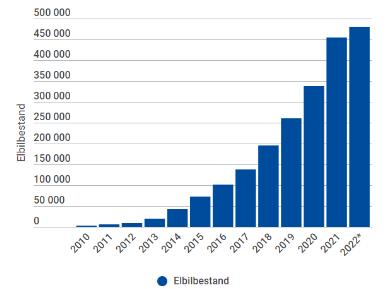

Det melder flere internasjonale medier som BBC News og NY times.
Moderjordismen oppsto rundt Nydalen i år 2019, og har spredt seg internasjonalt på lik linje som en pandemi. Moderjodismen handler om natur, om kjærlighet og om mennesker som en del av det endeløse universet. Vi er heldige som har fått intervjue de tre grunnleggerne; Jayan, Havi og Danhuy. Gjennom dem har vi fått dybdekunnskap innenfor den nyoppståtte religionen.
Les videre for å lære mer om religionens tro og dens retninger.
UG har dratt til offentligheten og spurt om hva den perfekte religion ville vært, TRYKK PÅ VIDEOEN for å se resultatene
Moderjord tar verden med storm
“Moderjordismen” bygger på den gamle troen
Før verdensreligionenes begynnelse var Moderjord en viktig skikkelse innenfor primitive naturreligioner. Mennesker tjente og adlød gudinnen i handelen for et mer fruktbart og evig liv, og hadde et snevert syn på universet siden de trodde jorden var hele universet. I undring og nysgjerrighet på hvordan universet fungerte hadde menneskene skapt moder-jord som en personifisering av jordas kraft på samme måte som andre religioner skapte guddommer for å tilfredsstille deres nysgjerrighet.
Det kanskje mest slående resultatet av moderne vitenskap er vår forståelse av at universet ikke bare er jordkloden. Dette strider mot det gamle synet fordi vitenskapen har utvidet perspektivet på universet som noe mer enn bare jordkloden. Moderjordistene har derfor tatt utgangspunkt i vitenskapen og personifisert hele universet og dens kraft som moderjord.
Moderjordismen har også tatt i bruk runer som omhandler moderjord som trolig er skrevet av primitive mennesker. Runene har blitt oversatt av lingvister, og deretter justert og forbedret av moderjordismens grunnleggere. Og ifølge dem setter runene et utgangspunkt for menneskeheten, og rettigheter for alt liv, altså et meget universalt livssyn.
Moderjordismens bok – Moderjordesis
Boken morderjordesis er den eneste boken i morderjordismen. Morderjordesis består av 3 sider. De to første sidene handler om morderjord og universets skapelse, mens den tredje siden omhandler lover og rettigheter. Grunnleggerne tok inspirasjon i runene skrevet av primitive mennesker, som vist under. Disse legger grunnlag for moderjordesis.
Bruken av gamle runer får grunnleggerne til å fremstå som mer troverdige.
Dette er runesteinen skrevet på papir:
 ;
;
Runestein funnet for 3 år siden i Nord-Norge. Trolig 3000 år gammel.
Dette er moderjordesis:
Moderjordesis 1:1
Moderjord er skyer og jord,
stjerner og universet.
Moderjord er alt.
Moderjodesis 2:1
Moderjord skapte skyer og jord,
stjerner og universet.
Moderjord skapte alt.
De syv menneskelige lovene: En skal være kjærlig
En skal ikke drepe en av samme art
En skal ikke gjøre andre som en ikke vil andre skal gjøre mot dem
En skal bli straffet med fengsel eller rehabilitering hvis mangfoldet mener at en har gjort en dårlig handling.
En skal kunne være uskyldig til det motsatte er bevist
En skal kunne være fri til å bestemme over sin egen kropp
En skal kunne ha tilhørighet
De fire universale rettighetene: Alle skapninger er født naturlige
Alle skapninger er født frie
Alle skapninger er født likeverdige
Alle skapninger er født med egen essens
Grunnleggeren Danhuy mener at mange land og religioner har lovverk som ikke er politisk korrekte, og derfor vil moderjordismen som en “perfekt tro”, innføre disse lovene som viser seg til å forbedre menneskers liv uavhengig tilhørighet. Moderjordismen er en universal tro der de fire universale rettighetene gjelder for alt levende. Hver art har egne lovverk eller måter å leve på, men grunnleggerne har forholdt seg til menneskelige egenskaper og brukt runene til å lage de syv menneskelige lovene som stemmer med menneskehetens etiske verdier.
Man kan se i kristendommen og islam at deres hellige bøker står sentralt i troendes liv, men Moderjordesis trenger ikke være hellig eller være sentral i ens liv. Med Moderjordesis som en slags bok i moderjordismen, legger det et større grunnlag for troende, noe mer enn bare Moderjord og vitenskapen. Dette tilrettelegger også for ulike oppfatninger av troen.
Hva hele universet deler
Vitenskapen forteller at universet er stort og med en lengde som er ifølge NASA tilnærmet lik 93 milliarder lysår, er det høyst sannsynlig for at det finnes annet liv og anvendt kunnskap annet menneskeheten. Men likevel er det mange av verdensreligionene i dag som ikke tar for seg dette store perspektivet. De setter utgangspunkt i det mindre bildet - jorda og menneskeheten.
Kristendommen som bare tilsier at Gud har skapt kosmos og kloden, sier ingenting om annet liv, rettigheter hos andre liv, vitenskap eller konkret om universets struktur bortsett fra at Gud skapte alt. Bibelen nevner ikke galakser eller DNA, som er to sentrale begreper i moderne vitenskap, men likevel tror kristne på at dette er Guds verk.
Moderjordistene tror på moderne vitenskap fordi vitenskapen ifølge moderjordesis er læren om morderjord. I vitenskapen kan man ikke utelukke hva som kan eksistere, og dermed vil moderjordismen også ta utgangspunkt i liv utenfor jorda. Moderjordismens universale rettigheter gjelder for alle som er en del av det store universet. Dette vil si at moderjordismen er en tro som gjelder overalt.
Svært fleksibel
Mange religioner i dag er lite fleksible med tanke på at vi lever i en mangfoldig og nyansert verden som stadig er i utvikling. Islam er en lov-religion som gjør den mindre fleksibel enn for eksempel kristendommen. I begge religionene finnes det hellige skrifter, bibelen og koranen, som gir troende frie fortolkninger av læren om verden og den rette liv, men denne læren er ikke nødvendigvis i samsvar med dagens forståelse av hva som er moralsk riktig, etisk korrekt eller vitenskapelig korrekt. Det stemmer for eksempel ikke med vitenskapen at verden ble skapt i løpet av syv dager eller at det ikke nødvendigvis er moralsk riktig å krige bare for selvforsvar.
Moderjordismen oppdateres stadig gjennom vitenskapen, noe som gjør troen svært fleksibel. Universet består ifølge moderjordismen av fire naturlige universale rettigheter og ulike lovverk for ulike liv, og denne fleksibiliteten gjør at religionen ikke blir statisk.
Ikke bare en tro for det moderne samfunnet på jorda
Moderjordismen som utviklet seg fra 2019 har allerede delt seg opp i to hovedretninger, tradisjonalismen og modernismen. Tradisjonalismen byr på en mer tradisjonell religionsoppfatning, mens den andre blir ansett som mer moderne. Moderjordismen i sin opprinnelse tok ikke utgangspunkt i noe annet enn de fire universale rettighetene, de syv menneskelige sannhetene og de to versene om moderjord og skapelsen, altså moderjordesis.
I tillegg til de sentrale moderjordistiske verdiene tar tradisjonalismen for seg ritualer, myter, helligsteder og fortellinger.
Modernismen derimot, tar ikke utgangspunkt i noe annet enn moderjordesis. Modernismen er majoritetsretningen.
Religionshistorikeren Ninian Smart (1927-2001) populariserte syv ulike religionsdimensjoner som han mente var essensielle for enhver religion, kjent som de syv religionsdimensjonene, også kjent som akronymet ROMMELS:
R – Rituelle dimensjonen: religiøse handlinger
O – Opplevelsesdimensjonen: følelser og opplevelser
M – Mytiske dimensjonen: religiøse fortellinger
M – Materielle dimensjonen: bygninger, gjenstander, kunst og naturfenomener
E – Etiske dimensjonen: normer og verdier
L – Læredimensjonen: sentrale tanker
S – Sosiale dimensjonen: fellesskap og organisering
Tradisjonalismen tar for seg alle dimensjoner som ifølge Smart skal til for at en religion skal defineres som en religion, mens modernismen ikke oppfyller alle av Smarts krav.
Tradisjonalister følger et ritual kjent som “Den Hellige Turen” som går ut på at troende tar en tur inn i det “uberørte” og hellige natur/jord som moderjord har skapt. Lignende den islamske rituelle bønnen som skal utføres fem ganger hver dag, skal dette ritualet utføres i daglig basis, men bare en gang på et valgfritt tidspunkt.
Men hva vil uberørt/hellig jord si? Ifølge tradisjonalister er skog, hav og andre biomer ren del av jordas naturlige landskap. De har fått ideen om hellig land gjennom Moderjordesis 1:1, hvor det står “Moderjord er alt”. Her kommer det frem at alt land er Moderjord, og dermed er alt land er hellig land. Så teknisk sett kan alt være hellig, men tradisjonalister er strenge på at alt som er menneskeskapt, ikke er hellig. Tradisjonalister mener derfor at man gjennom “Den Hellige Turen” kommer nærmere Moderjord.
Moderjordesis står meget sentralt hos tradisjonalister. Moderjordesis 1:1 og 2:1 gir et mytisk grunnlag av hva alt er og hvordan alt oppsto, og dette kan for noen gjøre at religionen blir mer mytisk og tradisjonell.
De fleste modernister derimot, baserer seg på logikk og vitenskap, og mener at enhver person kommer nærmere Moderjord gjennom vitenskapsforståelse om hvordan alt henger sammen. Læren om universet er det samme som læren om Moderjord siden Moderjord er en personifisering av universet.
Ulikt modernismen byr tradisjonalistenes “Hellige Tur" på en felles sosial møteplass, nemlig det hellige land. Dette kan gi et sterkere fellesskap/bånd for tradisjonelle moderjordister.
Tradisjonalismen oppfyller alle av Smarts krav, og retningen gir mulighet for mennesker med et tradisjonelt religionssyn bli en del av majoritetsreligionen moderjordismen. Dette vil ikke si at modernismen er mindre religiøst. Det beviser bare at tradisjonalismen tar utgangspunkt i Smarts tradisjonelle syn på religion, og åpner for tradisjonelle mennesker.
Vitenskap og forskning prøven å forstå seg på moderjord
Vitenskap er læren om moderjord. Gjennom blant annet fysikk, kjemi og matematikk, prøver det moderne samfunnet å forstå seg på moderjord. Som for eksempel hvordan Albert Einsteins massenergilov er en lov som forteller oss mer om moderjord.
Dette minner om Platons idelære. Platons idelære handler om at alt som kan ha gjenstand for menneskets sanser, bare er kopier av et ideal som bare finnes i en verden som mennesket ikke kan sanse, en ideverden. Han mente at formenes virkelighet var den reelle virkeligheten, og at den sansbare virkeligheten bare var en skygge for formenes virkelighet.
På lik linje hevder moderjordismen at vitenskap og forskning “sanser” Moderjord, men Moderjord er bare et ideal som en kan forstå seg på gjennom frelse. “Moderjord er alt”, mens vitenskapen bare er skyggen til Moderjord.
Svært bærekraftig
Alle religioner tar opp spørsmålet om skapelsen av universet, eller universene, i forskjellige former og med grad av klarhet eller detaljer. Imidlertid er moderjordistene enig i at skapelsen er en handling av moderjord og at alt har moderjords essens, og derfor bør behandles som sådan.
radisjonalistene mener at land som ikke er preget av mennesker er hellig. Dermed vil tradisjonalister ha i mål å ivareta jordas natur. Dette gjør mange tradisjonalister ved å blant annet være vegetarianere og redusere energiforbruket.
Modernistene derimot respekterer naturen ved å ta i bruk vitenskap for å løse klimaendring med nye innovasjoner. Det er vanlig for modernister å ha solcellepaneler på taket for å forsyne hjemmene deres med strøm. I Norge dominerer moderjordismen med hele 2 millioner troende hvor 1,9 millioner er modernister og hundretusen er tradisjonalister. Vi kan se at el-biler utgjør 83,7 prosent av alle nye personbiler i Norge ifølge nettavisen. Modernistene er også veldig forsiktig på å ikke overskride mer enn nødvendig vann- og strøm forbruk. Vi kan se en stor økning i el-biler og solcellepaneler etter moderjordismen oppsto som en offisiell religion i Norge. Religionen hjelper til med å få til en mer bærekraftig verden.

Statistikk fra Elbil.no
Religionen har ingen gud....eller?
I den primitive utgaven av moderjord så var moderjord ingen gud, men heller naturens sjel eller ånd, en type personifisering av naturen. De førkristne naturreligionene mente at naturens krefter er guddommelige og hedret moderjord gjennom ofring og tilbedelse.
I ulike gamle trossamfunn var tanken om at jorden var en Gud eller styrt av en Gud vanlig. I gresk mytologi var det gudinnen Gaia som var Moderjord. I norrøn mytologi ble Ymir drept og formet om til jordkloden. Ifølge egyptisk mytologi var Geb Guden for Jorda, men Nut var Guden for himmelen. Disse Gudene hadde en ting til felles, de hadde menneskelige egenskaper og satt fokus på menneskeheten.
Moderjord ifølge moderjordismen er universet og dens kraft eller ånd. Den har verken menneskelige egenskaper, eller egenskaper som i det hele tatt kan forklares. Moderjord har ingen intensjoner, og setter ikke fokus på menneskeheten eller noen andre skapninger, ulikt for eksempel Gud som man finner i kristendommen. Moderjord er en kraft, form for energi, sjel eller ånd avhengig av hvordan en ser på Moderjord.
På den andre siden kan man se noen fellestrekk mellom moderjord og guder. I hinduismen så finner vi Brahman som er verdenssjelen som er på mange måter lik hvordan moderjord i moderjordismen er universets sjel. I hinduismen kan Brahman også bli sett som en gud, og derfor kan moderjordister også oppfatte moderjord som en gud. Det finnes også en teologisk doktrine som hevder at gud, skaperen av universet, faktisk ble universet. Panteisme hevder at “Gud er i alt” og “alt er gud”, og pandeisme mener at gud ble til universet og sluttet å eksistere som en seprat enhet, og derfor kan dette likne på moderjordesis sin beskrivelse av moderjord.
“Gud er død” er et kjent utsagn som stammer fra den tyske filosofen Friedrich Nietzsche som viser hans syn som ateist. I Moderjordesis så står det ikke at Moderjord er en gud, men man har friheten til å oppfatte Moderjord som en guddom. Det vil si at ateister, som Friedrich Nietzsche, ikke ville definert Moderjord som en Guddom, og derfor ikke stått imot moderjordismen.
Kvinner og menn står likt
Menn og kvinner står likestilt i moderjordismen. I følge den tredje universale rettigheten er alle skapninger født likeverdige. I dette ligger det nok at uavhengig av kjønn, er alle likeverdige skapninger.
Kvinner hylles innad religionen. Siden den tradisjonelle Moderjord, er kjent som en kvinnelig kraft/guddom, vil kvinner hylles i større grad enn i andre religioner. I dagens samfunn hvor menn og kvinner fortsatt ikke er fullstendig likestilte, vil moderjordismen være med på å endelig balansere kjønnsforskjellen.
Seksualitet og seksuell orientering er et fritt valg. I den andre universale rettigheten, står det “alle skapninger er født frie”, som betyr at man i sin natur selv kan bestemme over seg selv og sin kropp. Dette inkluderer blant annet fri seksuell orientering, seksualitet og til og med abort. Frihet er et viktig ledd for en perfekt tro.
Frelse
De to retningene innenfor moderjordismen, altså tradisjonalismen og modernismen, har forskjellige syn på frelse. Det er stor diskusjon om hva frelse innebærer:
Noen mener at alle liv er “naturlige” og at alle da vil oppnå frelse,
Noen mener at det ikke finnes frelse.
En håndfull mener at man bare vil bli frelst hvis man lever i henhold til moderjordesis.
Moderjordismens skapere mente at frelse ligger nært tilknyttet den første universale rettigheten, som handler om at alle er født naturlige. Hva som ligger i uttrykket “naturlig”, og om en mister denne egenskapen mener de enhver skapning må tolke selv.
I dag har moderjordismens syn på frelse bevegd seg i to retninger sammen med tradisjonalismen og modernismen:
Tradisjonalistene setter de syv menneskelige sannhetene i sentrum, og mener at mennesker som går i strid med lovverket, ville fått egen energi transportert gjennom Moderjords livmor, og blitt gjenfødt. Mennesker som lever i harmoni med de syv menneskelige lovene, vil belønnes med at egen energi blir en del av universets kraft, altså en del av Moderjord. De mente at alle skapninger som levde i henhold til Moderjordesis, ville bli frelst.
Frelse i tradisjonalistisk syn minner dermed om en kombinasjon av frelseslæren i hinduismen og buddhismen. I hinduismen handler frelse om å frigjøre sin egen sjel, atman, fra det evige kretsløpet og bli en del av verdenssjelen, Brahman. I buddhismen handler frelse om å oppnå nirvana, en form for frigjørelse fra uvitenhet og lidelse. Med nirvana vil en ifølge buddhismen forflytte sin energi fra samsara, syklusen av gjenfødsler(lidelse), til en ny livsform uten lidelse.
I motsetning til tradisjonalismen mente modernismen at mennesker som ikke levde i harmoni med de menneskelige lovene, bare ville blitt straffet i henhold til lovverket. Ifølge modernistene blir alle en del av Moderjord. Modernistene som hyppig bruker vitenskapen i sin tro, tror ikke på reinkarnasjon eller sjelevandring, siden vitenskapen eller læren om Moderjord, ikke beviser tanken om reinkarnasjon. Modernistene tror dermed på at mennesker som dør, blir til materie og en del av Moderjord. Dette kan anses som frelse for noen modernister.
Troens kritikk
Hvorfor er det en perfekt religion når vi og troen i seg selv kan så lite om Moderjord? I kristendommen får vi en tydelig verdensforståelse gjennom beskrivelsen av guds håndverk gjennom bibelen. Moderjordismen tar utgangspunkt i vitenskapen, altså Moderjords lære, når det gjelder verdensforståelse. Vitenskapen har så vidt forstått seg på Moderjord, og derfor har ikke moderjordistene mye kunnskap om Moderjord. Religionen er derfor veldig fleksibel, fordi troen blir sterkere med økende kunnskap innenfor vitenskapen.
Hva er poenget med livet for modernister, hvis alle blir frelst eller del av Moderjord? Vel, for modernister handler livet om å bli en del av Moderjord. For ifølge dem er vitenskapen sentral, og de er frie mennesker som selv kan definere deres livsløp til Moderjord.
Moderjordismen har et lovverk, noe som i mange øyner svekker synet på religionen som perfekt. I moderjordismens tredje universale rettighet sies det at alle skapninger er født frie, men med menneskelige lover, er jo ikke mennesket fri, eller? Modernistene mener jo at en er fri til å velge å følge lovverket, så i teorien trenger man ikke å følge lovverket, men for at samfunnet som en helhet skal fungere trenger man dette lovverket som i sin helhet tar utgangspunkt i det vi, mennesker i dag, mener er politisk korrekt. En perfekt religion hadde nok vært en religion som hadde fungert uten politikk og lovverk, men i praksis er det umulig å ha et velfungerende samfunn uten et lovverk. Et lovverk, som den som man finner i moderjordismen, forsikrer derfor at et samfunn vil fungere, uten at det blir entropi og kaos.
Kritikere mener at denne retningen ikke blir veldig religiøs når den nesten bare tar utgangspunkt i vitenskapen. Som det flere ganger har blitt nevnt, er ikke vitenskapen sannheten ifølge moderjordismen, vitenskapen er læren om sannheten, læren om Moderjord. Og vitenskapen vil da antakeligvis være et hellig eller veldig viktig ledd for mange modernister, og dermed religiøst. Med tanke på håp, har modernister veldig ulike syn på frelse og håp.
Så, hva er en moderjordist og hvorfor betegnes deres religion som perfekt?
En moderjordist er en som tror på Moderjord. I moderjordismen tror man på vitenskapen, læren om Moderjord (framfor universet), og er derfor noe som står sentralt i troen. En moderjordist er enten en tradisjonalist eller modernist, og avhengig av hvilken retning man følger vil man ha ulikt livssyn og tro.
Det er mange flere moderjordister i definisjon, men er ubevisst over at de er det. Det er derfor religionen har fått en eksponentiell vekst i antall følgere. Ateister og agnostikere, som ofte tror på vitenskapen, kan tro på Moderjord, og religionen åpner derfor rom for de som hele tiden har asnett seg selv som lite religiøs/ikke religiøs.
Moderjordismen er en universal tro med masse fleksibilitet. Religionen er blant annet delt opp i to retninger, hvor den tradisjonelle retningen ofte holder seg til fattigere strøk, mens den moderne retningen finner sin plass i urbaniserte områder. Den tar utgangspunkt i vitenskapen, som stadig er i endring. Vitenskapen gjør at religionen blir troverdig, og at den ikke har hull. En kan ikke argumentere mot vitenskapen. Mange skiller vitenskap og religion, og vitenskap blir ofte sett på som noe ikke-religiøst, men med moderjordismen blir vitenskapen mer sentral i religionsdefinisjonen, og religionen blir egnet for nesten alle typer mennesker.